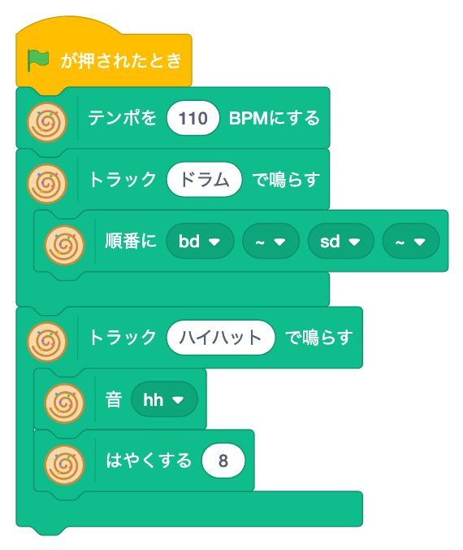

よりみち ／ EDMを学ぼう
ブロックをつんで、
クラブミュージックを鳴らそう。
Strudel は、コードを書きながら音楽を演奏する「ライブコーディング」のための音楽環境です。
8x9はそれを Scratch のブロックにしました。ビートを重ね、メロディを書き、音を変形させて、自分の曲をつくります。
MUSIC = PATTERN
音楽は、くりかえしのプログラム。
EDM（エレクトロニック・ダンス・ミュージック）は、短いパターンのくりかえしでできています。
キックを4回くりかえし、ハイハットを重ね、ときどき形を変える——
それはそのまま、プログラミングの「くりかえし」「同時に動かす」「変形する」です。
鳴らしてみて、ずれていたら直す。耳でデバッグするから、うまくいったかどうかがすぐわかります。
好きな音楽をつくっているうちに、プログラミングの考え方が体に入っていきます。
本物の音楽ツール
中で動いているのは Strudel そのもの。組んだブロックは Strudel のコードとして書き出せるので、そのまま「本物」へ進めます。
音を目でも見る
ピアノロールやスペクトルで、鳴っている音をステージに表示。リズムに合わせてスプライトを踊らせることもできます。
8x9が開発・公開
Scratch の拡張機能は8x9の自社開発。チュートリアル・ブロックじてん・リズム図鑑まで、教材ごと公開しています。
TRY IT
ビートを打ちこんでみよう。
マスをクリックして音を置き、▶ で鳴らします（音が出ます）。
下に出るのが、同じビートを Strudel のコードで書いたもの。1行が1つのトラックです。
BLOCKS → CODE
ブロックの順番が、そのままコードになる。

「トラック [ドラム] で鳴らす」の中に、上から順にブロックを積みます。いちばん上で音を決めて、その下に「どう変えるか」を重ねていく——これは Strudel のコードの書き方と同じ順番です。
$: s("bd ~ sd ~") // ドラム
$: s("hh").fast(8) // ハイハットCURRICULUM
14章で、ビートからトランスまで。
ブロックは3つのレベルに分かれていて、最初は少しだけ。慣れてきたら、レベルを上げてブロックを増やしていきます。
ビギナー — 音をならべて、重ねる
0〜7章- 00じゅんび
拡張機能を入れる
- 01音を 1つ 鳴らそう
▼ で音をえらんで鳴らす
- 02順番に ならべよう
音を並べてリズムにする
- 03トラックを かさねよう
ドラムとハイハットを同時に鳴らす
- 04メロディを つくろう
ドレミで旋律を書く
- 05キーで 曲を かえよう
キーボードで演奏を切り替える
- 06音を 目で 見よう
ピアノロール・スペクトルで表示
- 07ねこを おどらせよう
拍に合わせてスプライトを動かす
ノーマル — 曲を書く
8〜11章- 08ミニ記法・効果・音階
文字でリズムを書き、音に効果をかける
- 09リストと リズムで 曲を 書こう
リストを使って曲を組み立てる
- 10じぶんの 声で ビートを つくろう
録音した声を楽器にする
- 11ジャズ・ソウルの 和音
和音でひびきをつくる
マスター — クラブミュージックのわざ
12〜14章＋コラム- 12アシッドと トランスゲート
クラブミュージックの定番の音
- ＋コラム: ブロックを Strudel の コードに しよう
組んだブロックをコードで読む
- 13応用編: EDM・トランスの 音づくり
本格的なトランスの音を組み立てる
- 144つ打ちから 次へ
テクニック・ブレイク・ドロップで、リズムをかっこよく
MATERIALS
教材は、だれでも見られるように公開しています。
Strudel for Xcratch は AGPL-3.0 で公開しています（Strudel 本体を同梱しているため）。
BEYOND THE BLOCKS
ブロックの先に、本物のライブコーディング。
- 1ブロックで曲をつくる
Scratch のブロックで、ビート・メロディ・音づくり。
- 2コードを読む
組んだブロックを Strudel のコードとして読み、対応を知る。
- 3コードで書く
Strudel に直接コードを書いて、ブロックでは作れない曲へ。
- 4ライブで演奏する
コードを書きかえながら、その場で曲を変えていく。
※ 2〜4は、ブロックの先に描いている学びの道筋です。お子さまの興味と習熟度に合わせて、講師と相談しながら進めます。
FOR PARENTS
保護者の方へ
楽器や音楽の経験がなくても大丈夫ですか？
大丈夫です。最初は ▼ のメニューから音をえらんで並べるだけ。楽譜が読めなくても、鳴らして聞いて「かっこいい」と思える形を探していけます。
何が身につきますか？
「くりかえす」「同時に動かす」「形を変える」といったプログラミングの基本を、音を通して体で覚えます。鳴らして、聞いて、直す——耳で確かめる試行錯誤の習慣も育ちます。
どのコースで受けられますか？
マイクラAIコースの第2章「マイクラのAIワールドで学ぶ」（5〜8か月）の中で、「よりみち」として取り組みます（PC・教材込み、追加料金なし）。